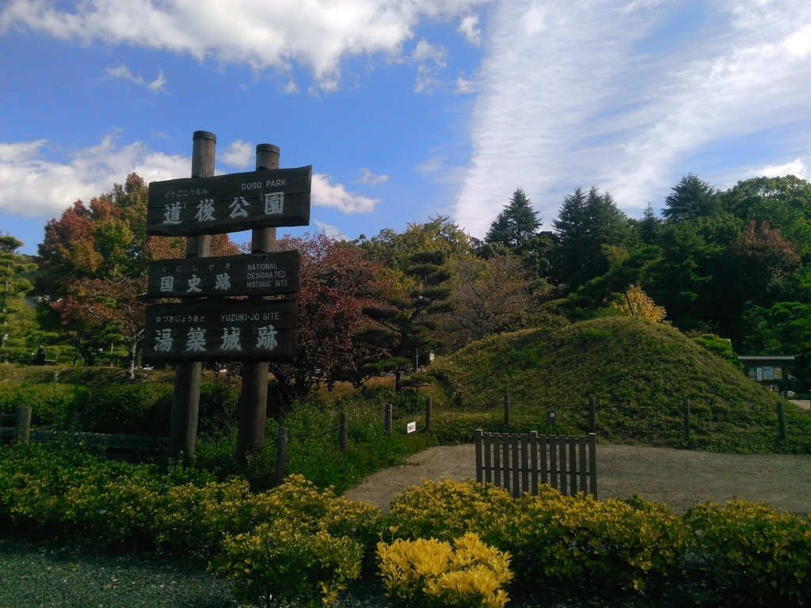
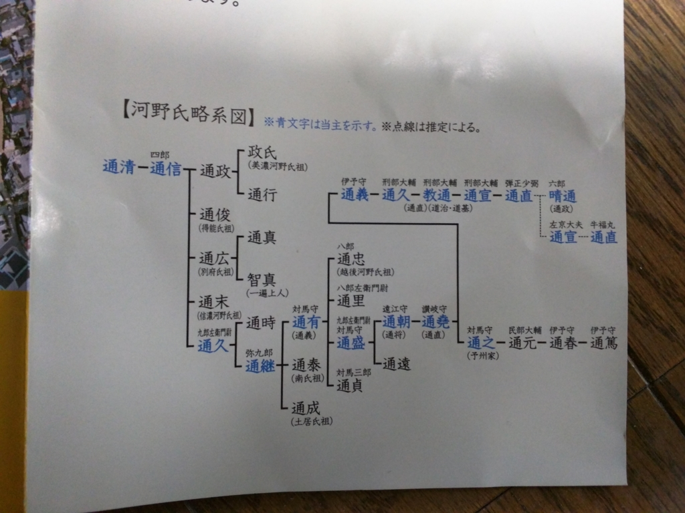
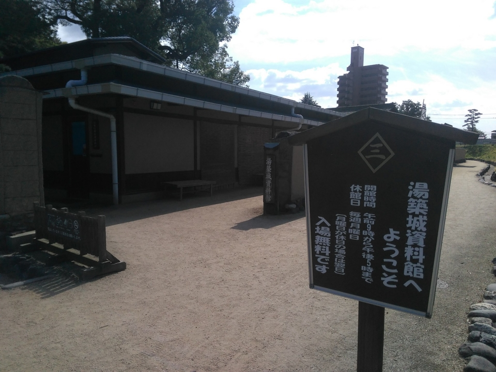
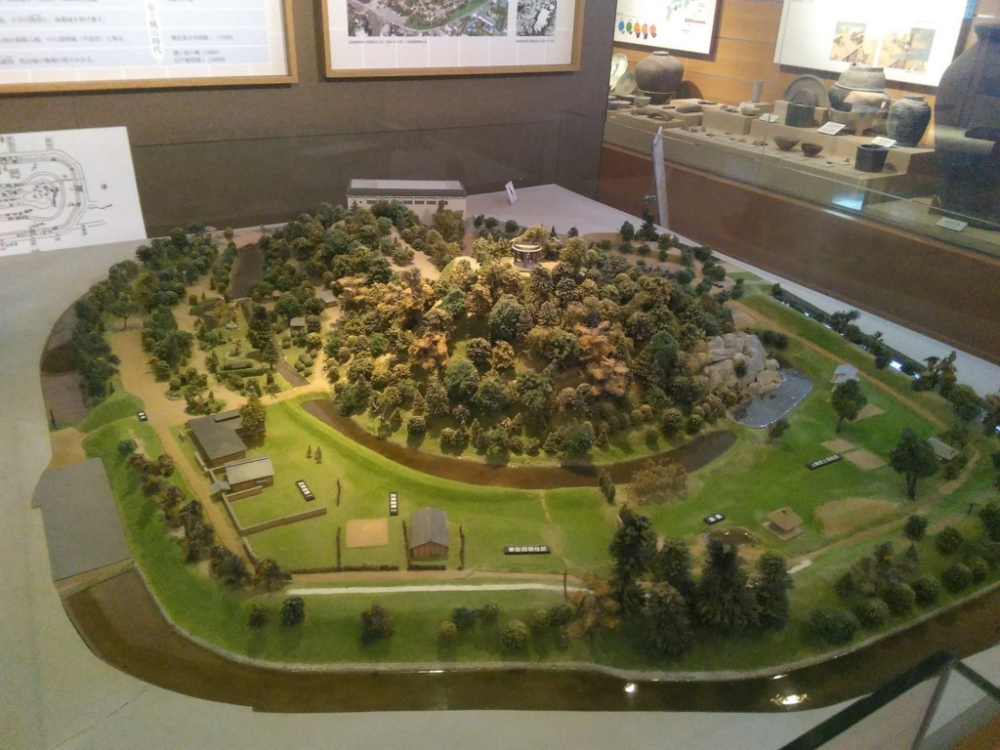
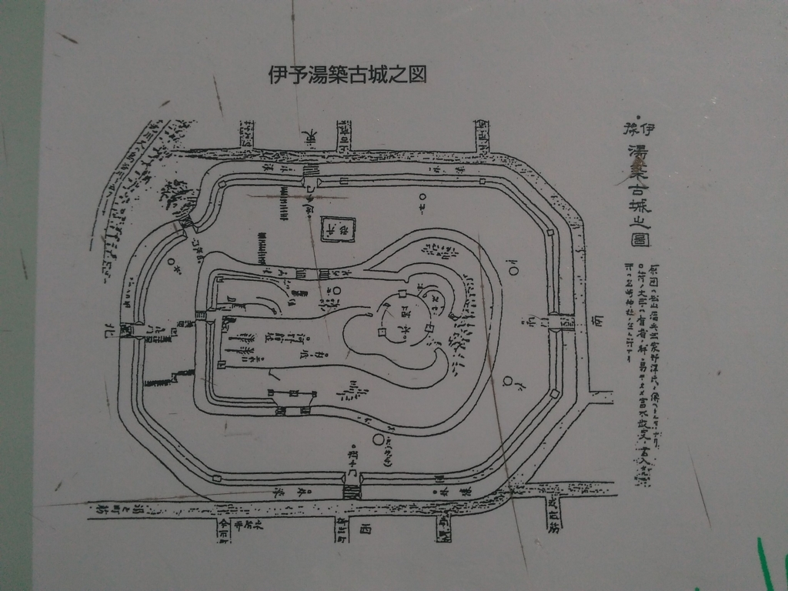
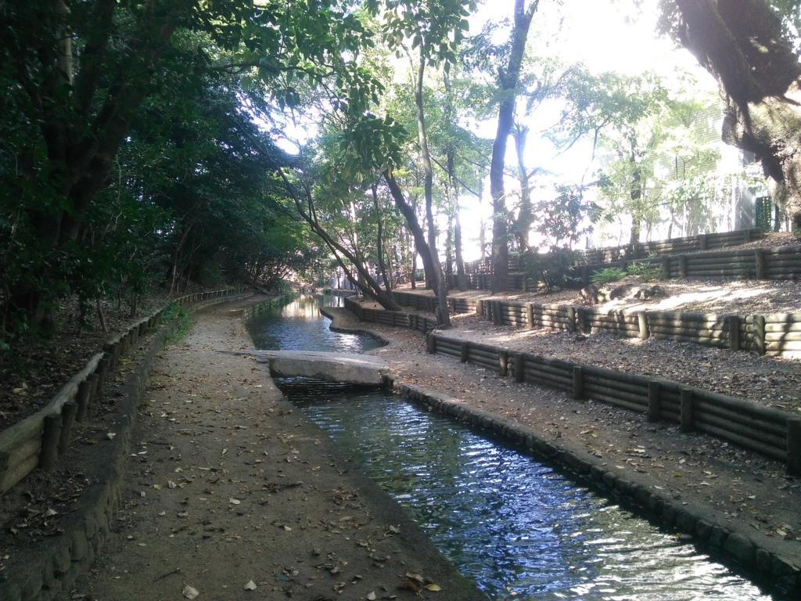
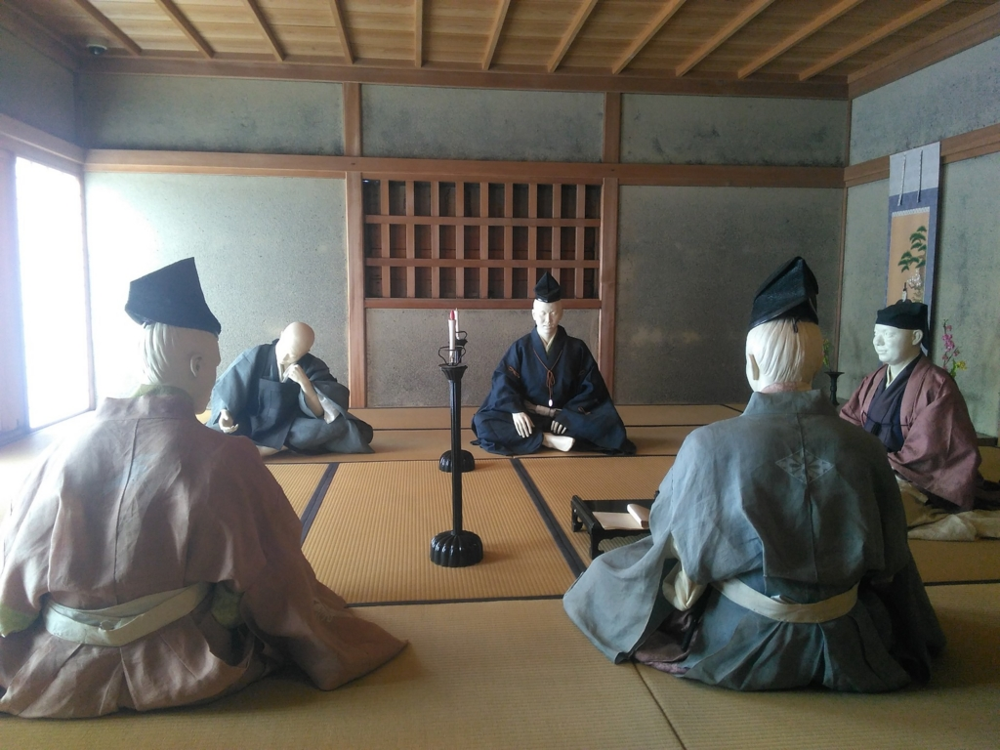
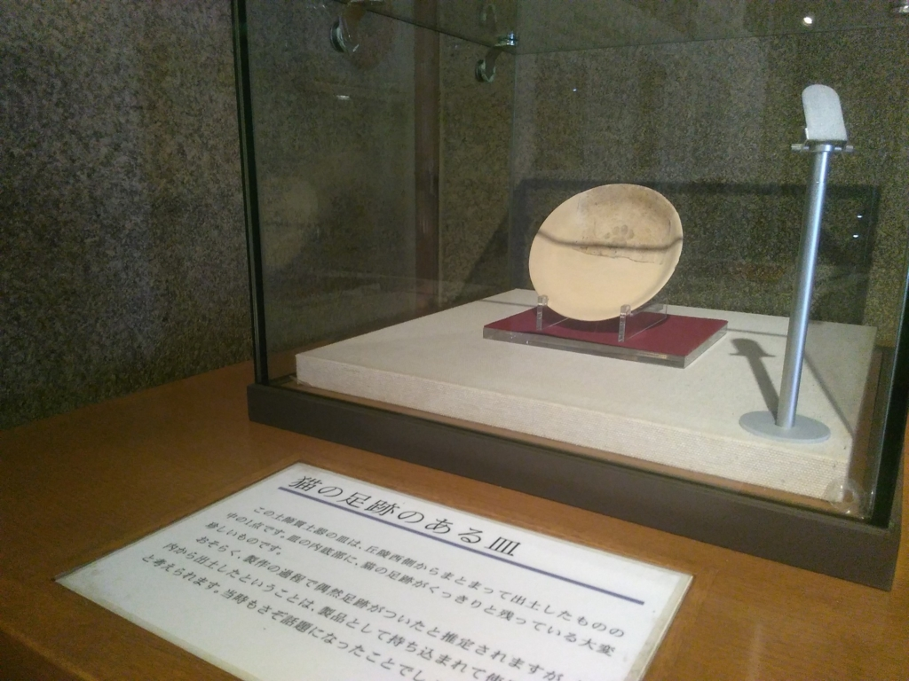

湯築城（道後公園）に行ったきたった。
公開日：

引っ越してもうすぐ2年になるのに、まだ行ったことがなかったので、ぶらりといってきました。
越智氏・河野氏
伊予国守護・河野氏が築いた城です。松山と言えば伊予松山城が有名ですが、中世ではここが伊予の政治・経済の中心地でした（たぶん）。
そもそも、古代の伊予は越智氏によって拓かれたようです（今でも愛媛は越智さんだらけです）。当時の国府は、現在の今治市にありました。

越智氏は難波から大陸へ至る海の道の一角を占め、伊予に根を張るとともに、聖武天皇に仕えた高名な律令学者・越智広江を輩出するなど、主に学者の家系として中央とも太いパイプを築いていました（ここにも大陸とのつながりが感じられますね）。越智氏は遣唐使事業などにも関わり、土着の名族として繁栄しますが、在京の越智氏の没落、そして越智貞原という人物が新羅人と謀反を企てたという事件（後に冤罪と判明）を境に、中央とのパイプを失い、勢いを失っていったようです。
この辺りまでが、平安時代までの話。その後、越智氏は道長の時代に相撲の名手・越智常世などを輩出しますが、中央に目を向けがちで、幾分貴族的だった越智氏に代わり、そこより分かれた（と自称する）より荒々しい、武家的な血筋が伊予でも台頭し始めます。その代表格が、河野氏というわけです（たぶん）。

1180年（治承4年）、源頼朝が打倒平家のために兵をあげると、河野通清（みちきよ）が源氏方に参加。平維盛の目代を討ち、伊予を完全に支配圏に置きます。ところが、翌1181年。平家方の田口成良（阿波）と沼賀西寂（備後）が伊予に攻め寄せてきます。河野通清は高縄山城（現在の愛媛県松山市）に立て籠もって抗戦しますが、味方から裏切りを出して大敗、最後は城から撃って出、壮烈な戦死を遂げました。
この頃の四国はまだまだ平家の勢いが強かったということでしょうか。また、この頃から外来勢力（備後・阿波）に翻弄されがちな伊予の国情が透けて見えるようです。
その後、河野通清の息子・河野通信（みちのぶ、一遍上人の祖父）が高縄半島（松山市の北、今治市のある半島）でゲリラ作戦を展開しながら、田口・沼賀勢に対抗。1185年、屋島に攻め寄せた源義経に呼応、はせ参じ、水軍を率いて壇ノ浦まで転戦しました（義経を討つ奥州合戦にも参加しています）。おかげで、河野家は守護職にこそつけなかったものの、伊予の地頭御家人の統率権を鎌倉幕府に認められることになります。
しかし、1221年、西面武士として院庁に仕えた子の河野通政とともに、承久の乱で通信は朝廷側につき、敗北。朝廷側が敗北すると、通政とともに領地へ戻り、高縄山城に籠もって反抗を続けますが、翌年に幕府方に居城を攻められ降伏。通政は斬られ、通信は陸奥国に流罪、そこで没します（のちに一遍上人がそこを訪れています）。河野氏は一族で唯一幕府側についた河野通信の子・河野通久が継ぐことで断絶を免れましたが、以後、伊予での影響力を失ってしまいます。
それを逆転したのが、通久の孫で河野氏中興の祖・河野通有（みちあり）です。通有は弘安の役で伊予の水軍衆を率いて出陣、博多の石築地（対元軍のために築かれた防塁）の前の浜辺に陣を敷いて戦いました。この不退転の決意はのちに「河野の後築地（うしろついじ）」と称されました。日本版の「背水の陣」ですね。これには島津氏をはじめとする九州諸将も一目を置いたそうで、元軍も石築地を回避して志賀島を占領。これをさらに急追し（志賀島の戦い）、叔父の河野通時を喪うという犠牲を払いつつも、敵船に乗り込んで元軍の将を生け捕るという武勲をあげます。これがもとで、河野氏は旧領の多くを回復することができました。
湯築城が築かれたのは、そのあとのことのようです。河野家も安定と興隆の時期に入り、守り一辺倒の山城・高縄山城では不便になってきたのかもしれませんね。
湯築城

今は道後公園として整備されていますが、ここは動物園だったそうで。動物園が砥部に移ったあと、発掘調査を進めて得た成果が小さな資料館にまとめられています。

湯築城の全景（ミニチュア）。なんか伊予鉄のとおっている玄関（ミニチュアの写真でいうところの左手）が正面だと思っていたのですが、実はここは搦め手（勝手口）。大手門はその裏側だったそうです（写真右側）。

大手門の前にはフロイスの『日本史』にも伝わる市場が広がり、道が石手寺（河野氏が再興したお寺）につながっていたのだそう。ボランティアのおばちゃんがいろいろ説明してくれたのだけど、確かそんな感じだった気がする。『日本史』に描かれた道後の殷賑が、実はフロイス本人じゃなくて弟子によるものだというのは初めて知ったかも（そもそも原文を読んだことないのでよく知らんのだけど）。
あとのことはめんどくさいので、酢酸先生のブログでも読んでくれたらいいと思います。中世のお城ってこんな感じだったのねーって感じですね。

松山城ほどメジャーな観光スポットではないですが、散歩にはもってこいのスポットだと思います。

個人的には初見だとちょっとキモい連歌会を再現した武家屋敷のなかや、

猫の足跡のついた皿あたりが見所です。